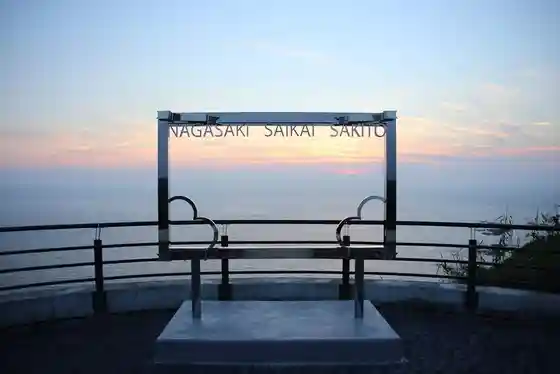
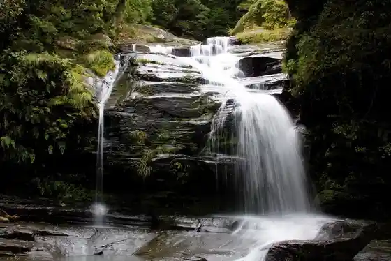
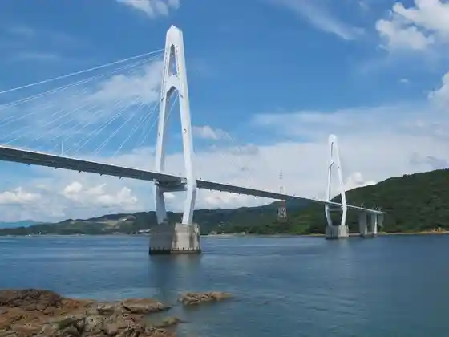
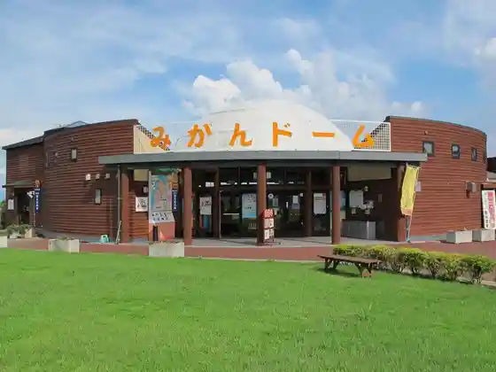

Nagasaki Oranda Village (Kyu Potohorun Nagasaki)
Saikai, Nagasaki · Official / source link
Hokui 33 Do Sen Lookout
Saikai, Nagasaki · 0959-34-2208 · Official / source link

Tsugane Oto Shi Falls
Saikai, Nagasaki · 0959-22-1111 · Official / source link

Oshima Bridge
Saikai, Nagasaki · 0959-32-9779 · Official / source link

Roadside Station Saikai Mikan Domu
Saikai, Nagasaki · 0959-37-4933 · Official / source link

Yuki Ura Seaside Park
Saikai, Nagasaki · 0959-37-0064 · Official / source link
Shiri Kyu Suna Sato Seaside Park
Saikai, Nagasaki · 0959-37-0064 · Official / source link
Yokose Ura Park
Saikai, Nagasaki · 0959-37-0064 · Official / source link
Sachi Mono River Park
Saikai, Nagasaki · 0959-22-9624 · Official / source link
Kokuzo Yama Park
Saikai, Nagasaki · 0959-37-5833 · Official / source link
Isa no Ura Park
Saikai, Nagasaki · 0959-37-9087 · Official / source link
Sakito Folk History Museum Inoe Mitsuharu Literature Museum / Bungaku Hi
Saikai, Nagasaki · 0959-37-0257 · Official / source link
Yuri Gaku Park
Saikai, Nagasaki · 0959-34-2001 · Official / source link
Oshima Shuzo
Saikai, Nagasaki · 0959-34-5678 · Official / source link
Saikai Genki Village
Saikai, Nagasaki · 0959-32-2500 · Official / source link
Okama Beach
Saikai, Nagasaki · 0959-37-5833 · Official / source link
Hachi no Ko Shima
Saikai, Nagasaki · 0959-37-5833 · Official / source link
Mugen Kyo Ko Hana Bo
Saikai, Nagasaki · 0959-27-0588 · Official / source link
Oda Kaizuka Iseki Park
Saikai, Nagasaki · 0959-37-5833 · Official / source link
Heigen Sato Kirishitan Bohi
Saikai, Nagasaki · 0959-37-5833 · Official / source link